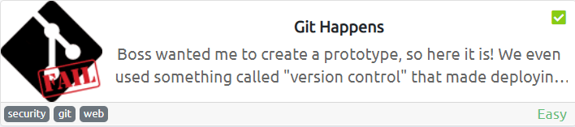
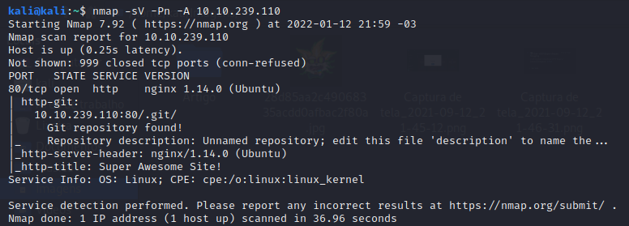
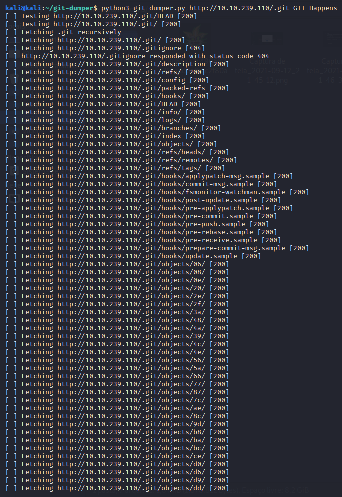
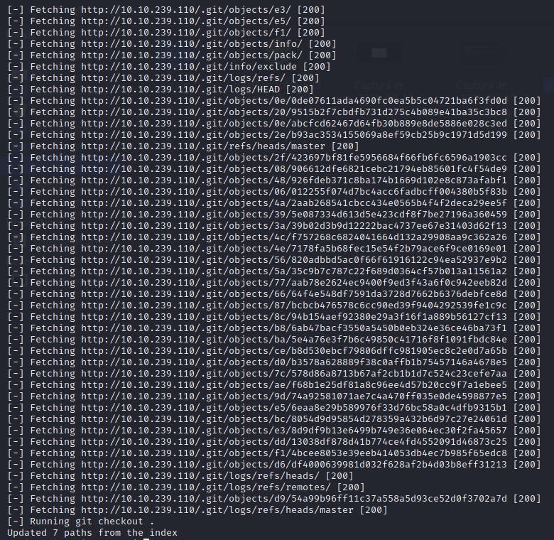
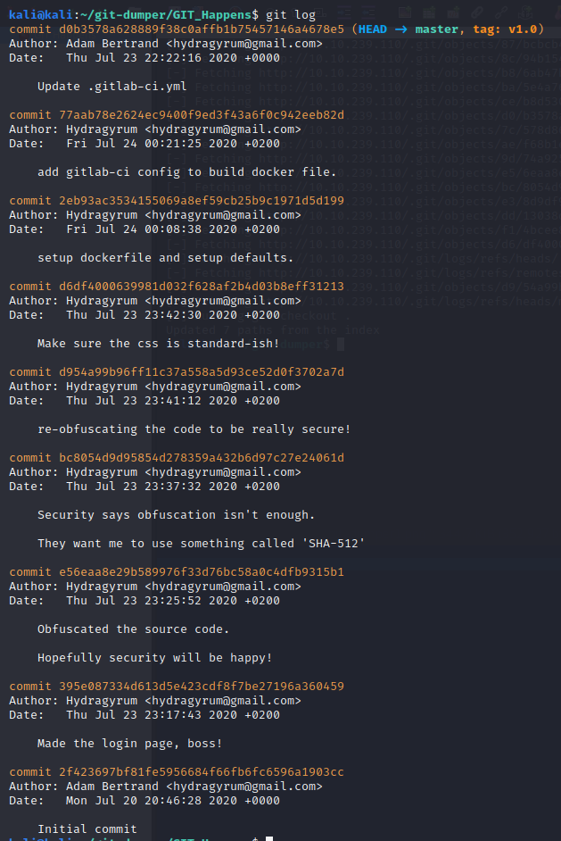
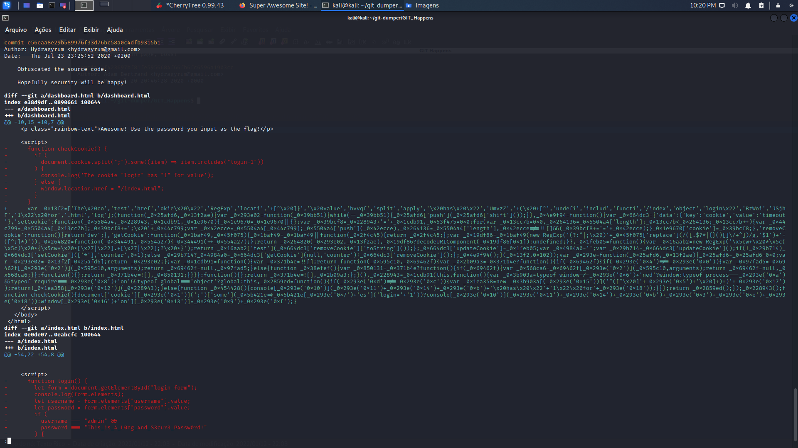

O objetivo dessa máquina é encontrar a senha da aplicação, então vamos lá
Apesar do nome da sala ser bem sugestivo, vou seguir o costume e rodar o nmap para enumerar a máquina

No resultado do nmap podemos ver que somente a porta 80 está aberta na máquina e também nos mostra que ele encontrou um diretório chamado .git
Vou usar uma ferramenta chamada git-dumper para baixar esse repositório git pra minha máquina local
* Pra baixar a ferramenta: (https://github.com/arthaud/git-dumper)


Agora que o repositório do git já está na minha máquina eu posso ver todos os commits que foram feitos na aplicação

Entre os commits realizados teve um que me chamou a atenção, a descrição dele é: "Ofuscou o código-fonte. Espero que a segurança seja feliz!", vamos ver o que tem nele

Entre as partes removidas do código está o script de verificação de usuário e senha, nele podemos ver a senha da aplicação que está em claro
* Pra entender como o Git funciona: (https://git-scm.com/book/pt-br/v2)